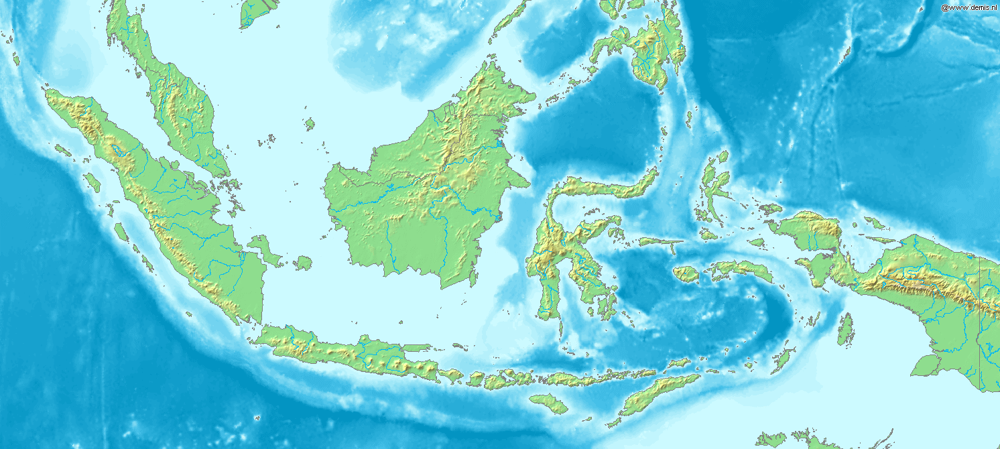

Geoportal Kesiapsiagaan & Tanggap Darurat Nuklir
Pilih peta tematik di bawah ini untuk membuka peta interaktif pelaksanaan bimbingan teknis, latihan uji coba, persebaran sensor monitoring I-RDMS, laporan kedaruratan, hingga pengawasan sumber terbungkus well logging.
Stasiun I-RDMS Active
42 Titik
Kegiatan Bimtek
18 Provinsi
Gelombang Uji Coba
12 Sektor
Status Response
24/7 SIAP
Direktori Peta Tematik
Klik peta-peta dibawah ini untuk membuka peta interaktif spasial

Peta Pelaksanaan Bimbingan Teknis Nasional Tanggap Darurat Nuklir
Pemetaan sebaran pelaksanaan bimbingan teknis peningkatan kapasitas SDM tanggap darurat nuklir tingkat nasional dan daerah.
Peta Pelaksanaan Pelatihan Uji Coba Penanggulangan Kesiapsiagaan Nuklir Nasional
Visualisasi sebaran latihan simulasi kedaruratan, uji coba sistem sirene, dan gelombang penanggulangan bencana nuklir nasional.
Peta Potensi Lokasi Pemasangan I-RDMS
Peta analisis potensi dan persebaran lokasi pemasangan Integrated Radiation Monitoring System (I-RDMS) secara real-time.
Peta Laporan Kecelakaan/Kedaruratan Nuklir
Sistem laporan geospasial insiden kedaruratan, anomali paparan radiasi, serta respons penanganan cepat di lapangan.
Peta Abandoned Well Logging
Monitoring geospasial lokasi sumur minyak/gas dengan sumber radioaktif terbungkus yang ter-abandoned / ditinggalkan secara terawasi.